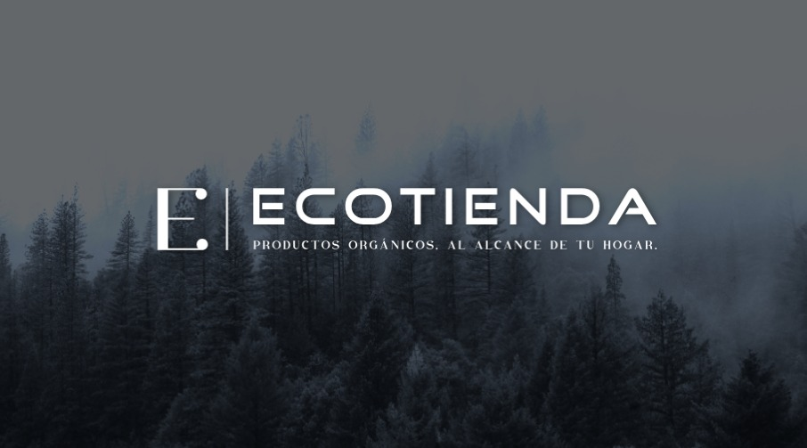

<meta charset="UTF-8">
    <meta name="viewport" content="width=device-width, initial-scale=1.0">
    <title>Quienes Somos</title>
    <link rel="stylesheet" href="https://use.fontawesome.com/releases/v5.8.1/css/all.css">
    <link rel="stylesheet" href="../../css/styles.css">
    <link href="https://cdn.jsdelivr.net/npm/bootstrap@5.0.2/dist/css/bootstrap.min.css" rel="stylesheet" integrity="sha384-EVSTQN3/azprG1Anm3QDgpJLIm9Nao0Yz1ztcQTwFspd3yD65VohhpuuCOmLASjC" crossorigin="anonymous">

    <header id="navbar"></header>

    <section id="quienes-somos" class="py-5">
    <div class="container">
      <div class="row">
        <div class="col-md-6">
          <h2 class="mb-4">Quienes Somos</h2>
          <p>Nuestra tienda en línea se dedica a ofrecer productos orgánicos y ecológicos de alta calidad para el hogar. Nos especializamos en una amplia gama de productos de limpieza y cuidado del hogar que están diseñados pensando en el bienestar de las personas y el medio ambiente.</p>
          <p>Nos enorgullece comprometernos a proporcionar productos libres de ingredientes dañinos tanto para la salud como para el medio ambiente. Creemos en la importancia de ofrecer opciones sostenibles y responsables que contribuyan a un estilo de vida más saludable y ecológico.</p>
          <p>Nuestro equipo está dedicado a brindar un excelente servicio al cliente. Nos esforzamos por ser asesores confiables, ofreciendo recomendaciones sobre los productos más adecuados para las necesidades de limpieza y cuidado del hogar de nuestros clientes, al mismo tiempo que consideramos el impacto ambiental de dichos productos.</p>
        </div>
        <div class="col-md-6">
          
        </div>
      </div>
      <div class="row mt-5">
        <div class="col">
          <h3 class="mb-4">Nuestros Valores</h3>
          <p>En nuestra tienda, encontrarás todo lo que necesitas para mantener tu hogar limpio, saludable y sostenible. Ofrecemos una selección cuidadosamente curada de productos que cumplen con nuestros altos estándares de calidad y ecoamigables. Desde detergentes ecológicos hasta productos de limpieza multiusos y artículos para el cuidado del hogar, estamos aquí para ayudarte a tomar decisiones informadas y conscientes.</p>
          <p>Valoramos tu satisfacción como cliente y nos esforzamos por superar tus expectativas en cada interacción. Creemos en la importancia de elegir productos que sean seguros para tu familia y amigables con el planeta. Únete a nosotros en nuestro compromiso de crear un entorno más limpio y saludable para todos.</p>
          <p>¡Gracias por elegir nuestra tienda en línea! Juntos podemos marcar la diferencia en la forma en que cuidamos de nuestro hogar y nuestro planeta.</p>
        </div>
      </div>
    </div>
  </section>
  <script src="https://cdn.jsdelivr.net/npm/bootstrap@5.0.2/dist/js/bootstrap.bundle.min.js" integrity="sha384-MrcW6ZMFYlzcLA8Nl+NtUVF0sA7MsXsP1UyJoMp4YLEuNSfAP+JcXn/tWtIaxVXM" crossorigin="anonymous"></script>
    <script src="../../js/LayoutsLoader.js"></script>
    <script src="../../js/lib.js"></script>
    <script src="quienes.js"></script>